Objetivos de aprendizagem
Na Parte 1 deste livro, a estatística foi apresentada como um conjunto de métodos orientados à descrição sistemática dos dados, enfatizando a organização, a síntese e a apresentação das informações relevantes de um conjunto de dados. Nesse percurso, foram introduzidos os conceitos fundamentais que estruturam a análise estatística, como variável, população, amostra, parâmetro e estatística, além das principais formas de representação por tabelas e gráficos e do uso de medidas-resumo de posição e dispersão. Esses elementos constituem a base conceitual necessária para transformar dados brutos em informação estruturada em tabelas, permitindo identificar padrões, níveis típicos e graus de variabilidade nos fenômenos observados.
Em aplicações concretas, os dados analisados raramente correspondem à totalidade do fenômeno de interesse. Em geral, dispõe-se apenas de uma amostra, obtida por um processo de coleta condicionado por restrições práticas, como tempo, custo e viabilidade operacional, enquanto as conclusões pretendidas dizem respeito a uma população mais ampla, que não é observada integralmente. Essa diferença entre o que se observa e o que se deseja conhecer estabelece um limite para a interpretação dos resultados descritivos, pois as medidas-resumo calculadas na amostra podem variar de uma coleta para outra e nem sempre coincidem, com a mesma precisão, com as medidas-resumo associadas à população.
Essa limitação introduz a incerteza como um elemento central do raciocínio estatístico. Como os dados analisados correspondem apenas a uma amostra, os resultados obtidos dependem do conjunto específico de observações coletadas. Parte da variabilidade observada reflete diferenças reais entre as unidades de observação estudadas, mas outra parte decorre do caráter aleatório do processo de amostragem e coleta de dados. Por esse motivo, amostras distintas, mesmo quando extraídas da mesma população, tendem a produzir descrições diferentes, o que torna necessário dispor de um arcabouço conceitual que permita representar, interpretar e controlar formalmente essa variabilidade.
A teoria da probabilidade é introduzida para transformar a incerteza em um objeto tratável de maneira rigorosa e, assim, fornecer o fundamento conceitual necessário à inferência estatística. Ao formalizar a variabilidade associada a fenômenos aleatórios, ela permite estabelecer critérios pelos quais se pode inferir informações — principalmente a respeito dos valores típicos de medidas-resumo — sobre uma população a partir de dados amostrais, sempre reconhecendo que tais inferências são expressas em termos de grau de confiança e risco de erro.
Neste capítulo, inicia-se o estudo sistemático da probabilidade com foco em sua interpretação no contexto estatístico e em seu papel como base lógica da inferência. O objetivo é construir uma base conceitual sólida que permita compreender, nos capítulos seguintes, como a incerteza é incorporada aos modelos estatísticos e como o raciocínio probabilístico orienta a produção de conhecimento a partir de dados.
A probabilidade é um conceito desenvolvido para lidar, de maneira sistemática, com situações em que um resultado não pode ser previsto com certeza antes de ocorrer. Sua origem histórica está associada a problemas práticos de jogos de azar e de repartição de apostas, nos quais era necessário estabelecer critérios racionais para comparar possibilidades e tomar decisões sob incerteza. A partir do século XVII, com contribuições decisivas de autores como Pascal e Fermat, esse tipo de raciocínio passou a ser formulado de forma matemática, inaugurando um corpo de ideias que mais tarde se consolidaria como teoria de probabilidade.
Nos séculos seguintes, a teoria de probabilidade foi sendo generalizada e formalizada, deixando de se restringir a jogos para se tornar uma linguagem aplicável a quaisquer fenômenos bem definidos cujo o resultado não pode ser antecipado de maneira determinística. Em outras palavras, o mesmo fenômeno pode conduzir a resultados diferentes em repetições sob condições semelhantes, sem que isso signifique falta de método. Essa passagem do caso dos jogos para uma formulação abstrata tornou possível estudar, de forma unificada, tanto situações discretas quanto contínuas, sempre com a mesma preocupação de descrever o conjunto de desfechos admitidos e de comparar incertezas por meio de critérios consistentes.
No século XVIII e, sobretudo, ao longo do século XIX, esse arcabouço passou a ser incorporado de modo sistemático à estatística, inicialmente no estudo dos erros de observação e dos métodos de ajustamento, e depois na análise de fenômenos populacionais e sociais, consolidando a ligação entre regularidades empíricas e modelos probabilísticos. Esse desenvolvimento preservou uma exigência comum, a de atribuir valores numéricos à incerteza de maneira consistente e comparável entre eventos.
Nas subseções a seguir, serão introduzidos os objetos básicos da linguagem probabilística, com notação explícita e relações formais mínimas. O objetivo é fixar com precisão o que é o procedimento, quais resultados são admitidos, como esses resultados são reunidos em um universo de referência e de que maneira propriedades de interesse são representadas como conjuntos. Essa base permitirá, nas seções posteriores, definir a probabilidade como uma atribuição numérica coerente a eventos.
Um experimento aleatório é um procedimento bem definido, passível de repetição sob condições semelhantes, cujo resultado individual não pode ser previsto com certeza antes de sua realização. A exigência de ser bem definido implica que exista uma regra clara de execução e uma regra clara de registro do desfecho. Em termos formais, cada realização do experimento produz um resultado que pode ser representado por um símbolo \( \omega \).
A aleatoriedade não significa ausência de estrutura, mas a possibilidade de mais de um resultado ser compatível com o experimento. Assim, em repetições sucessivas, o experimento pode produzir \( \omega_1 \), \( \omega_2 \) e assim por diante, sem que seja possível determinar antecipadamente — e com certeza — qual desses resultados ocorrerá em cada realização.
Um exemplo comum de experimento aleatório é o lançamento de um dado de seis faces, no qual se registra o número indicado na face superior após o dado parar. Nessa descrição, cada experimento produz um resultado \( \omega \) pertencente ao conjunto \( \{1,2,3,4,5,6\} \). Em experimentos diferentes, podem ocorrer resultados distintos, como \( \omega_1=2 \) e \( \omega_2=5 \), sem que se possa antecipar com certeza qual número aparecerá em uma execução específica.
Uma vez definido o experimento aleatório, o passo seguinte consiste em explicitar quais resultados podem ocorrer em um novo experimento. Chama-se resultado possível cada desfecho admissível do experimento. Em uma execução específica observa-se um único resultado \( \omega \), enquanto a lista de resultados possíveis descreve todas as alternativas que poderiam ser observadas sob a mesma descrição do procedimento.
No exemplo do dado, em que se registra o número da face superior, os resultados possíveis são cada um dos seis números do dado, reunidos no conjunto \( \{1,2,3,4,5,6\} \). Assim, qualquer resultado observado deve satisfazer \( \omega\in\{1,2,3,4,5,6\} \). Essa restrição não é uma afirmação sobre frequência ou chance, mas sim uma consequência direta da delimitação do experimento aleatório. O ponto essencial é que, antes de qualquer cálculo, o conjunto de possibilidades deve estar claramente delimitado e compatível com o que se decidiu observar.
O espaço amostral, indicado por \( \Omega \), é o conjunto que reúne todos os resultados possíveis do experimento. Sua função é fixar o universo de referência no qual a linguagem probabilística será construída. Em particular, dizer que um resultado ocorreu equivale a afirmar que um elemento \( \omega\in\Omega \) foi observado em uma realização.
No experimento do lançamento do dado, considerando que o resultado registrado é o número da face superior, o espaço amostral é \( \Omega=\{1,2,3,4,5,6\} \). Essa especificação fixa o universo de alternativas compatíveis com a descrição do experimento. Assim, afirmar que ocorreu \( \omega=5 \) é afirmar que o resultado do experimento aleatório é um elemento de \( \Omega \).
Com \( \Omega \) explicitado, a análise passa a tratar de propriedades do resultado dentro desse universo. Essas propriedades serão representadas como subconjuntos de \( \Omega \), o que permite formular de modo preciso o que significa uma propriedade ocorrer em uma realização.
Um evento é uma coleção de resultados do experimento, formulada a partir do espaço amostral \( \Omega \). Em termos formais, um evento é um subconjunto, isto é, um conjunto \( A\subseteq \Omega \). No experimento do dado, eventos podem representar propriedades ou alguma característica classificatória do número observado, como obter um número par — logo, \( A=\{2,4,6\} \), —, ou obter um número pelo menos quatro, logo \( B=\{4,5,6\} \).
A linguagem de eventos permite também combinar propriedades por meio de operações entre conjuntos. O complemento \( A^c \) representa a não ocorrência de \( A \), a união \( A\cup B \) representa a ocorrência de pelo menos um dos eventos e a interseção \( A\cap B \) representa a ocorrência simultânea de ambos. Essas operações serão essenciais quando a probabilidade passar a ser atribuída a eventos e quando regras de cálculo forem estabelecidas.
Os conceitos apresentados nas subseções anteriores desempenham papéis distintos e complementares dentro da estrutura da teoria de probabilidade. O experimento aleatório fixa o procedimento e a regra de observação. Cada execução do experimento produz exatamente um resultado, representado por um elemento \( \omega\in\Omega \), enquanto o espaço amostral \( \Omega \) reúne todos os resultados admissíveis segundo essa descrição. Já um evento corresponde a um subconjunto \( A\subseteq\Omega \), formulado para representar uma propriedade de interesse associada ao resultado.
Em uma realização concreta do experimento, observa-se apenas um único resultado. Em \( n \) repetições sob condições semelhantes, obtém-se uma sequência de resultados \( (\omega_1,\dots,\omega_n) \), na qual cada termo pertence ao mesmo espaço amostral \( \Omega \). Essa sequência descreve o que ocorreu em cada execução, mas não altera o conjunto de possibilidades nem as propriedades previamente definidas. A estrutura probabilística é construída a partir do espaço amostral e dos eventos, e não a partir de uma realização isolada.
Essa distinção entre procedimento, resultado individual, conjunto de possibilidades e propriedades formuladas como eventos estabelece o vocabulário necessário para o passo seguinte. Uma vez que os eventos estejam bem definidos como subconjuntos do espaço amostral, torna-se possível associar a eles valores numéricos que expressem, de modo sistemático, o grau de plausibilidade de sua ocorrência dentro do modelo considerado. É precisamente essa atribuição numérica, construída sobre os eventos definidos neste nível abstrato, que será formalizada na próxima seção como probabilidade.
A seção anterior estabeleceu os objetos que estruturam a linguagem probabilística. Um experimento aleatório define o procedimento e a regra de registro, o espaço amostral fixa o universo de resultados possíveis e os eventos representam propriedades do resultado como subconjuntos desse universo. Com essa base, a teoria passa a tratar de como quantificar a incerteza associada a eventos, de modo que comparações e combinações de propriedades possam ser feitas sem contradição.
Esta seção tem dois objetivos complementares. Primeiro, apresenta-se a probabilidade como uma regra de atribuição numérica definida sobre eventos, explicitando condições mínimas de coerência que essa atribuição deve satisfazer. Em seguida, discutem-se interpretações que esclarecem o significado de \( P(A) \) e os tipos de justificativa que podem sustentar essa atribuição em diferentes contextos.
Quando descrevemos um experimento aleatório, não buscamos apenas listar o que pode acontecer, mas também quantificar o quão plausíveis são certas propriedades do resultado. No lançamento de um dado honesto de seis faces, por exemplo, é natural afirmar que o resultado será um dos valores \( \{1,2,3,4,5,6\} \). Muitas perguntas de interesse, porém, não se referem a um número específico, mas a uma característica. A afirmação de que o resultado será par corresponde ao evento \( A=\{2,4,6\} \). A probabilidade entra como a ferramenta que associa um número a esse tipo de evento, permitindo comparar eventos dentro do mesmo universo de resultados.
Formalmente, uma vez fixado o espaço amostral \( \Omega \), a probabilidade é uma função que atribui a cada evento \( A \subseteq \Omega \) um número real \( P(A) \) no intervalo \( [0,1] \). O sentido operacional desse número é que valores maiores indicam eventos considerados mais plausíveis no modelo, enquanto valores menores indicam eventos menos plausíveis.
No caso simples do dado honesto, os seis resultados elementares são tratados como igualmente prováveis. Isso permite definir a probabilidade como uma razão de contagens. Se \( n(A) \) denota o número de elementos do evento \( A \) e \( n(\Omega) \) denota o número de elementos do espaço amostral \( \Omega \), então a probabilidade é dada por
\[ P(A)=\frac{n(A)}{n(\Omega)} \]
No exemplo do evento par \( A=\{2,4,6\} \), temos \( n(A)=3 \) e \( n(\Omega)=6 \), de modo que \( P(A)=\frac{3}{6} \). Essa conta mostra por que, nesse contexto, a probabilidade pode ser lida como a proporção de casos favoráveis dentro do conjunto de possibilidades descrito pelo experimento. Essa forma de definição também esclarece por que a probabilidade é atribuída a eventos e não a resultados isolados. Um resultado elementar \( \omega \) apenas ocorre ou não ocorre em uma realização. Já um evento reúne resultados que compartilham uma propriedade e, por isso, permite formular afirmações gerais sobre o experimento.
A interpretação clássica fornece uma leitura conceitual para a definição de probabilidade apresentada na subseção anterior. Ela se aplica a situações nas quais a descrição do experimento apresenta uma simetria natural entre os resultados possíveis, de modo que nenhum deles se destaca, a priori, como mais ou menos plausível. Nesses casos, a atribuição de probabilidades iguais aos resultados elementares é justificada pela própria forma como o modelo é construído.
O ponto central dessa interpretação não é o cálculo em si, mas a hipótese de equiprobabilidade. Ao assumir que todos os resultados elementares recebem o mesmo peso, a probabilidade de um evento passa a depender apenas de quantos resultados o compõem, em relação ao total de possibilidades descritas no espaço amostral. A regra de contagem surge, assim, como consequência direta dessa simetria estrutural, e não como um princípio independente.
Quando o espaço amostral \( \Omega \) é finito e a equiprobabilidade é plausível, essa ideia pode ser expressa pela razão entre o número de resultados favoráveis e o número total de resultados possíveis, nos termos da definição anterior. Para um evento \( A \subseteq \Omega \), essa forma clássica corresponde a \( P(A) \) como uma proporção dentro do conjunto de possibilidades considerado.
O alcance da interpretação clássica é limitado ao domínio em que a hipótese de simetria é defensável. Sempre que não houver uma justificativa clara para tratar os resultados elementares como igualmente plausíveis, ou quando o conjunto de resultados não puder ser descrito de forma finita e explícita, essa interpretação deixa de ser adequada. Ainda assim, ela é valiosa por tornar explícito que toda atribuição de probabilidades depende da forma como o experimento e seus resultados são modelados.
A interpretação frequentista fornece uma leitura conceitual distinta para a definição de probabilidade apresentada anteriormente. Em vez de justificar \( P(A) \) por simetria entre resultados — como na interpretação clássica —, ela associa a probabilidade ao comportamento observado quando um experimento pode ser repetido muitas vezes sob condições semelhantes. Nessa perspectiva, a probabilidade expressa uma regularidade empírica que se manifesta ao longo de repetições sucessivas.
Considere novamente o lançamento de um dado honesto, agora pensado como um procedimento repetido. O dado é lançado \( n \) vezes, e observa-se a proporção com que cada resultado aparece no conjunto total de lançamentos. Para um evento como \( A=\{2,4,6\} \), essa proporção corresponde à razão entre o número de vezes em que ocorre um resultado par e o número total de lançamentos realizados. A interpretação frequentista sustenta que, à medida que \( n \) aumenta, essa proporção tende a se estabilizar em torno de um valor característico.
De forma mais formal, seja \( f_n(A) \) a frequência relativa do evento \( A \) em \( n \) repetições do experimento. A interpretação frequentista identifica a probabilidade com o valor limite dessa sequência de frequências, quando tal limite existe.
\[ \lim_{n\to\infty} f_n(A)=P(A) \]
Essa formulação deixa claro que a probabilidade não é a frequência observada em uma amostra particular, mas o valor em torno do qual as frequências relativas tendem a se concentrar no longo prazo. Em aplicações reais, trabalha-se sempre com um número finito de repetições, de modo que as proporções observadas estão sujeitas a flutuações. A probabilidade \( P(A) \) descreve, nesse contexto, uma característica do mecanismo gerador dos resultados, enquanto as frequências relativas são realizações empíricas desse mecanismo.
A interpretação frequentista é, portanto, apropriada quando o experimento pode ser concebido como repetível e quando se deseja relacionar probabilidades a regularidades de longo prazo. Ela estabelece uma ponte direta entre o formalismo probabilístico e dados observados, ao mesmo tempo em que preserva a distinção entre o plano teórico do modelo e o comportamento variável de amostras finitas.
A interpretação subjetiva fornece uma leitura conceitual complementar às interpretações anteriores. Nessa perspectiva, a probabilidade não é justificada por simetria estrutural nem definida como limite de frequências observadas, mas entendida como uma medida do grau de plausibilidade de um evento à luz da informação disponível. A probabilidade expressa, assim, uma avaliação racional da incerteza, condicionada ao conhecimento assumido no momento da análise.
Essa dependência da informação pode ser explicitada escrevendo-se a probabilidade de um evento \( A \) como \( P(A \mid I) \), onde \( I \) representa o conjunto de informações consideradas. Diferentes estados de informação podem levar a atribuições probabilísticas distintas para o mesmo evento, sem que isso implique incoerência, desde que as regras formais da probabilidade sejam respeitadas.
O aspecto central dessa interpretação é a exigência de coerência interna. As probabilidades atribuídas devem obedecer às mesmas condições estruturais válidas em qualquer abordagem, como compatibilidade com operações entre eventos e atualização consistente quando novas evidências são incorporadas. Essa leitura é especialmente adequada em situações nas quais o evento de interesse não pode ser pensado como parte de um experimento repetível, mas ainda assim se deseja expressar incerteza de forma quantitativa e controlada.
As interpretações da probabilidade discutidas nas subseções anteriores diferem quanto ao significado atribuído a \( P(A) \), mas todas compartilham a mesma estrutura formal. Em qualquer leitura, a probabilidade é definida sobre eventos de um espaço amostral bem especificado e fornece uma medida para comparar a plausibilidade de diferentes propriedades associadas aos resultados de um experimento aleatório.
Na estatística, essa estrutura é utilizada para lidar com a variabilidade presente em conjuntos de dados observados. Ao trabalhar com observações que podem variar de uma realização para outra, a estatística recorre à probabilidade como linguagem para descrever regularidades, expressar incerteza e formular comparações entre eventos. Proporções observadas, frequências relativas e padrões recorrentes são interpretados à luz de um referencial probabilístico previamente definido.
As diferentes interpretações orientam essa relação de maneiras distintas. A interpretação clássica é adequada quando a construção do problema fornece simetria suficiente para justificar pesos iguais. A interpretação frequentista é adequada quando os dados podem ser entendidos como resultado de repetições de um mesmo procedimento. A interpretação subjetiva é adequada quando a atribuição de probabilidades reflete a informação disponível e pode ser revista à medida que novas evidências são incorporadas. Em todos os casos, a probabilidade fornece o elo conceitual que permite organizar e interpretar a variabilidade observada nos dados.
Uma vez definida a probabilidade como uma função associada a eventos de um experimento aleatório, é necessário estabelecer quais relações essa função deve satisfazer para que a atribuição seja coerente. Essas relações não dependem da interpretação adotada para \( P(A) \), mas decorrem da forma como os eventos se organizam como subconjuntos do espaço amostral.
As propriedades fundamentais da probabilidade expressam, portanto, restrições mínimas que garantem compatibilidade entre operações com eventos e os valores numéricos a eles associados. Elas permitem comparar eventos, combinar propriedades e verificar se uma atribuição probabilística respeita a estrutura lógica do experimento considerado.
Nesta seção, essas propriedades são apresentadas de forma progressiva, partindo de casos elementares e avançando para relações obtidas a partir da combinação de eventos. O objetivo é compreender como a probabilidade se comporta em situações básicas, preparando o terreno para aplicações posteriores sem recorrer a técnicas ou conceitos além dos já introduzidos.
Entre todos os eventos associados a um experimento aleatório, existem dois casos extremos que servem como referência para a atribuição de probabilidades. Um deles corresponde a uma propriedade que nunca pode ocorrer, enquanto o outro corresponde a uma propriedade que ocorre em todas as realizações possíveis do experimento. Esses casos delimitam os valores mínimo e máximo que uma probabilidade pode assumir.
Um evento impossível é representado pelo conjunto vazio \( \varnothing \), pois não contém nenhum resultado possível do experimento. Como não há realização em que esse evento possa ocorrer, atribui-se a ele probabilidade zero. De forma análoga, o evento certo é representado pelo próprio espaço amostral \( \Omega \), já que toda realização do experimento produz um resultado pertencente a esse conjunto. Por essa razão, sua probabilidade é igual a um.
\[ P(\varnothing)=0 \qquad\text{e}\qquad P(\Omega)=1 \]
Esses dois casos fornecem uma interpretação direta dos extremos da escala probabilística. Valores próximos de zero correspondem a eventos considerados pouco plausíveis no modelo, enquanto valores próximos de um correspondem a eventos considerados muito plausíveis. Ao fixar esses referenciais, garante-se que a probabilidade funcione como uma medida compatível com a estrutura do espaço amostral e com a noção intuitiva de impossibilidade e certeza.
As probabilidades atribuídas aos eventos devem refletir as relações lógicas entre esses eventos. Em particular, quando um evento está contido em outro, a ocorrência do primeiro implica necessariamente a ocorrência do segundo. Essa relação de inclusão entre conjuntos impõe uma restrição direta sobre os valores das probabilidades.

Seja \( A \subseteq B \) dois eventos definidos no mesmo espaço amostral \( \Omega \). Como todo resultado que pertence a \( A \) também pertence a \( B \), o evento \( A \) não pode ser mais plausível do que \( B \). Isso se traduz na relação
\[ P(A)\leq P(B) \]
Essa propriedade expressa a monotonicidade da probabilidade em relação à inclusão de eventos. Eventos mais específicos, que impõem mais restrições aos resultados possíveis, não podem receber probabilidade maior do que eventos mais gerais. Em particular, ao comparar um evento com o próprio espaço amostral, recupera-se o fato de que toda probabilidade é limitada superiormente por \( 1 \).
A relação entre inclusão e probabilidade fornece um critério simples de coerência. Sempre que uma atribuição probabilística violar essa desigualdade, ela entra em conflito com a estrutura de conjuntos que organiza os eventos do experimento. Assim, essa propriedade assegura que a probabilidade respeite a hierarquia natural entre eventos definidos no mesmo espaço amostral.
Muitos eventos são definidos a partir de uma propriedade imposta aos resultados possíveis de um experimento. Quando essa propriedade não é satisfeita, obtém-se automaticamente o conjunto dos resultados restantes, que continuam pertencendo ao mesmo espaço amostral. Esse conjunto define o complemento do evento.

Seja um espaço amostral \( \Omega \) e um evento \( A \subseteq \Omega \). O complemento de \( A \), indicado por \( A^{c} \), é o conjunto formado por todos os resultados possíveis do experimento que não satisfazem a condição associada a \( A \).
Em cada realização do experimento, observa-se exatamente um resultado \( \omega \) pertencente ao espaço amostral. Esse resultado se enquadra em uma única das duas alternativas consideradas. Ou ele satisfaz a condição que define \( A \), ou ele pertence ao conjunto de resultados que definem o complemento. Não há possibilidade de ambas as situações ocorrerem simultaneamente, nem de nenhuma delas ocorrer.
Essa estrutura se expressa de forma direta na linguagem dos conjuntos. O evento \( A \) e seu complemento \( A^{c} \) são disjuntos e, juntos, cobrem todo o espaço amostral.
\[ A \cap A^{c} = \varnothing \qquad\text{e}\qquad A \cup A^{c} = \Omega \]
Como a probabilidade atribui valor \( 1 \) ao evento certo \( \Omega \), e como \( A \) e \( A^{c} \) esgotam todas as possibilidades do experimento, a probabilidade do complemento é completamente determinada pela probabilidade do próprio evento.
\[ P(A^{c}) = 1 - P(A) \]
Essa relação permite calcular probabilidades de forma indireta, mantendo a coerência com a estrutura do espaço amostral. Em particular, sempre que for mais simples caracterizar os resultados que não satisfazem uma determinada condição, trabalhar com o complemento fornece uma alternativa operacional equivalente.
Até aqui, a probabilidade foi associada a um único evento, entendido como uma condição específica sobre os resultados de um experimento. No entanto, em muitas situações, o interesse recai não apenas sobre eventos isolados, mas sobre as relações entre eventos distintos definidos dentro do mesmo espaço amostral.
Em particular, pode ser relevante analisar casos em que um resultado satisfaz pelo menos uma entre duas condições possíveis. Esse tipo de análise nos conduz ao conceito de união de eventos, que reúne todos os resultados que pertencem a pelo menos um dos eventos considerados.
Considere dois eventos \( A \) e \( B \). O evento \( A \cup B \) ocorre quando o resultado observado pertence a \( A \) ou pertence a \( B \). O aspecto central é verificar se existem resultados que pertencem simultaneamente aos dois eventos. Quando não há resultados comuns, cada realização do experimento pode satisfazer no máximo um dos eventos, e dizemos que \( A \) e \( B \) são mutuamente exclusivos. Nesse caso, a soma direta das probabilidades descreve corretamente a probabilidade da união. Quando existe parte comum, porém, essa soma passa a contar alguns resultados mais de uma vez, o que exige um ajuste no cálculo.

Para tornar essa distinção explícita, considere o lançamento de um dado honesto de seis faces, cujo espaço amostral é \( \Omega = \{1,2,3,4,5,6\} \). Defina o evento \( A \) como o conjunto dos resultados pares, \( A = \{2,4,6\} \), e o evento \( B \) como o conjunto dos resultados maiores ou iguais a quatro, \( B = \{4,5,6\} \). Nesse experimento, os resultados \( 4 \) e \( 6 \) pertencem simultaneamente a \( A \) e \( B \), de modo que a interseção \( A \cap B \) não é vazia. Ao somar \( P(A) \) e \( P(B) \), esses resultados comuns seriam considerados duas vezes.
A correção consiste em subtrair uma vez a probabilidade da parte comum entre os eventos, eliminando a duplicidade de contagem. Esse raciocínio leva à expressão geral da probabilidade da união.
\[ P(A \cup B) = P(A) + P(B) - P(A \cap B). \]
Quando os eventos são mutuamente exclusivos, não existe parte comum e a interseção é vazia. Nesse caso, o termo \( P(A \cap B) \) é nulo, e a expressão se reduz à soma simples das probabilidades.
\[ \text{Se } A \cap B = \varnothing, \quad P(A \cup B) = P(A) + P(B). \]
Essa relação mostra que a regra geral da união incorpora automaticamente o caso em que não há sobreposição. A fórmula mais ampla não introduz um novo princípio, mas apenas corrige a contagem quando os eventos compartilham resultados. Quando essa situação não ocorre, o cálculo se simplifica de forma natural, preservando a interpretação intuitiva da união como a reunião de possibilidades distintas dentro do espaço amostral.
As propriedades fundamentais da probabilidade não servem apenas para definir como os valores são atribuídos a eventos. Elas também impõem limites e relações necessárias entre essas atribuições, funcionando como um critério de coerência para qualquer modelo probabilístico construído sobre um espaço amostral. As consequências apresentadas a seguir decorrem diretamente das definições e resultados já estabelecidos.
Em primeiro lugar, a probabilidade de um evento nunca pode ser negativa. Como a probabilidade é definida como uma medida associada a subconjuntos do espaço amostral, não faz sentido atribuir valores menores que zero a um evento. Formalmente, para qualquer evento \( A \), vale sempre \( P(A) \geq 0 \).
De modo complementar, a probabilidade de um evento não pode ultrapassar um. O valor \( 1 \) corresponde à probabilidade do espaço amostral completo, isto é, ao evento certo. Como nenhum evento pode conter mais resultados do que o próprio espaço amostral, para qualquer evento \( A \) tem-se \( P(A) \leq 1 \).
Uma terceira consequência importante diz respeito à relação entre eventos mais específicos e eventos mais gerais. Se um evento \( A \) está contido em um evento \( B \), isto é, \( A \subseteq B \), então todo resultado que faz \( A \) ocorrer também faz \( B \) ocorrer. Nessa situação, a probabilidade do evento mais específico não pode ser maior que a do evento mais geral.
\[ \text{Se } A \subseteq B, \quad P(A) \leq P(B). \]
Essas relações funcionam como um teste de consistência. Sempre que uma atribuição de probabilidades viola algum desses limites, o problema não está nos dados observados, mas na forma como os eventos foram definidos ou nas probabilidades que lhes foram associadas. Por isso, essas consequências devem ser entendidas como restrições básicas que toda probabilidade válida precisa respeitar.
Ao longo deste capítulo, a probabilidade foi construída como uma medida abstrata associada a eventos definidos em um espaço amostral, com propriedades que garantem coerência interna e permitem relacionar diferentes eventos de forma sistemática. Partindo de conceitos básicos, como experimento aleatório, espaço amostral e eventos, estabelecemos uma linguagem formal mínima para descrever incerteza de modo controlado.
As propriedades fundamentais examinadas mostraram que a probabilidade não é atribuída de maneira arbitrária. Relações como complemento, união e inclusão impõem restrições claras, que funcionam como critérios de consistência para qualquer modelo probabilístico. Essas relações asseguram que operações lógicas entre eventos sejam refletidas corretamente nos valores numéricos associados a eles.
Esse formalismo é o que permite conectar probabilidade e estatística; quando um procedimento de coleta pode ser repetido sob condições semelhantes, diferentes resultados são possíveis, e é nesse conjunto de possibilidades que o raciocínio inferencial se apoia. A probabilidade fornece o referencial para avaliar o quão compatíveis certos padrões observados são com a descrição adotada para o experimento.
No próximo capítulo, avançaremos para situações em que a avaliação de um evento precisa levar em conta uma informação já conhecida, representada pela ocorrência de outro evento. Isso exige mudar o referencial de comparação: em vez de medir probabilidades no espaço amostral completo \( \Omega \), medimos probabilidades dentro de um subconjunto \( B \), desde que \( P(B) > 0 \). A probabilidade condicional formaliza essa ideia e será a ferramenta central para expressar dependência e atualização de informação.
FÁVERO, Luiz Paulo; BELFIORE, Patrícia. Manual de análise de dados: estatística e modelagem multivariada com Excel®, SPSS® e Stata®. 1. ed. Rio de Janeiro: Elsevier, 2017.
MAGALHÃES, Marcos Nascimento; LIMA, Antonio Carlos Pedroso de. Noções de Probabilidade e Estatística. 7. ed., 1. reimpr. São Paulo: Editora da Universidade de São Paulo, 2011.
SARTORIS, Alexandre. Estatística e introdução à econometria. 2. ed. São Paulo: Saraiva, 2013.
BUSSAB, Wilton de Oliveira; MORETTIN, Pedro Alberto. Estatística básica. 10. ed. São Paulo: SaraivaUni, 2023.
LARSON, Ron; FARBER, Betsy. Estatística aplicada. 6. ed. Tradução José Fernando Pereira Gonçalves; Revisão técnica Manoel Henrique Salgado. São Paulo: Pearson Education do Brasil, 2015.
TRIOLA, Mario F. Introdução à estatística. 12. ed. Tradução e revisão técnica Ana Maria Lima de Farias, Vera Regina Lima de Farias e Flores. Rio de Janeiro: LTC — Livros Técnicos e Científicos Editora, 2017.
MOOD, Alexander McFarlane; GRAYBILL, Franklin A.; BOES, Duane C. Introduction to the theory of statistics. New York: McGraw-Hill, 1974.
SAVAGE, Leonard J. The Foundations of Statistics. 2. ed. rev. New York: Dover Publications, 1972.
WARE, William B.; FERRON, John M.; MILLER, Barbara M. Introductory Statistics: A Conceptual Approach Using R. New York: Routledge, 2013.